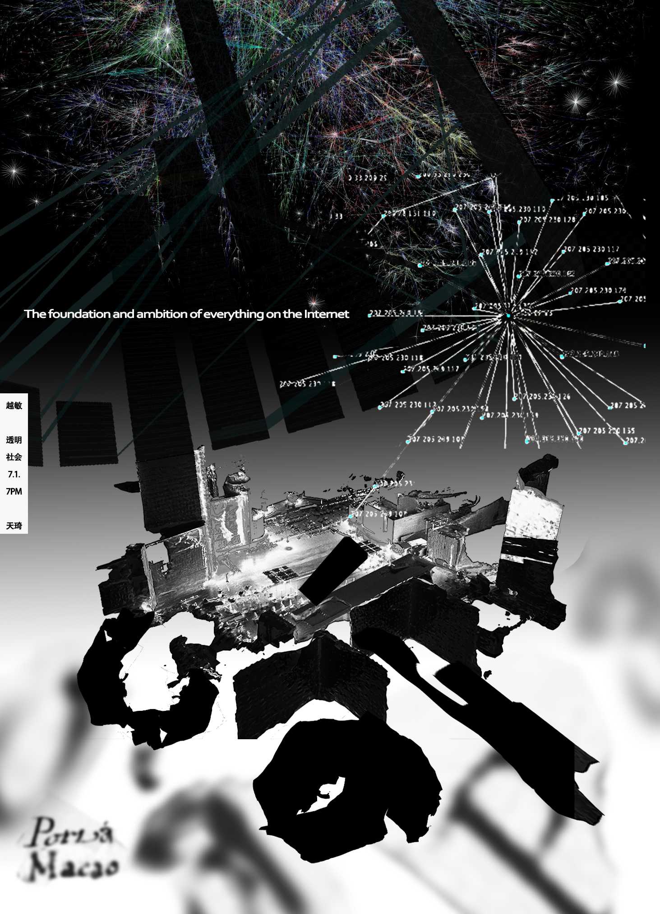

邀请了上海创作者天琦和越敏分享他们对澳门土生葡语和互联网历史的研究。 Transparent Society | From Macanese Portuguese to Internet Infrastructure (July 1, 7 PM) Invited Shanghai-based creators Tian Qi and Yue Min to share their research on Macanese Portuguese and the history of the internet.